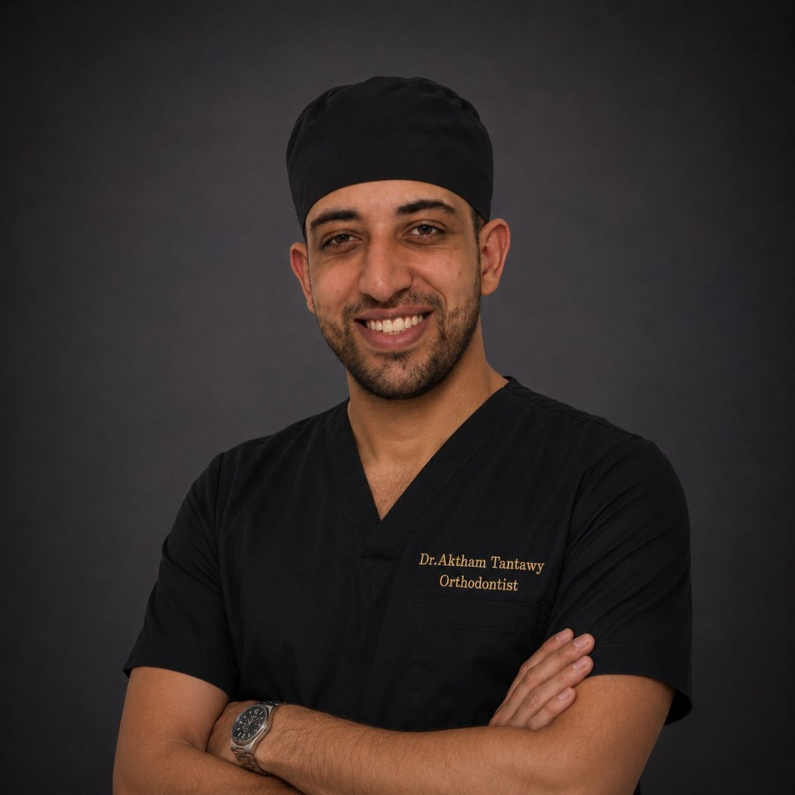

طب وتقويم الأسنان
د. أكثم إسماعيل طنطاوي
طب الأسنان في الزقازيق
نرحب بكم في عيادة د. أكثم إسماعيل طنطاوي لطب وتقويم الأسنان في الزقازيق. يشرح الطبيب خيارات العلاج بعد الفحص، وقد تختلف الخطة والمدة من شخص لآخر.

د. أكثم إسماعيل طنطاوي
خدمات العيادة
تقويم الأسنان والكشف
تُناقش خيارات طب الأسنان وتقويم الأسنان المناسبة بعد الفحص.
معلومات عن الطبيب
طب وجراحة الأسنان وتقويم الأسنان
تختلف خيارات العلاج بحسب الحالة، ويشرح الطبيب المتاح منها بعد الفحص.
تقييم الحالة
تختلف خطوات التقييم والخطة باختلاف الحالة.
خيارات العلاج
تُناقش خيارات العلاج بعد الفحص، وقد تختلف من حالة إلى أخرى.
إجابات حول تقويم الأسنان
الأسئلة الشائعة حول علاج التقويم
معلومات عامة عن تقويم الأسنان. يوضح الطبيب الخيارات بعد فحص الحالة.
تختلف مدة علاج تقويم الأسنان حسب الحالة وخطة العلاج ومدى الالتزام. يحدد الطبيب المدة المتوقعة بعد الفحص والتقييم.
قد يختلف الشعور أثناء تركيب التقويم أو تعديله من شخص لآخر. يمكن للطبيب شرح ما قد تتوقعه وكيفية التعامل مع أي انزعاج.
يمكن تقييم تقويم الأسنان للبالغين بعد فحص صحة الأسنان واللثة والعظام، ويشرح الطبيب الخيارات المناسبة لكل حالة.
يبدأ علاج التقويم بالتشخيص الدقيق للأسنان والفكين والإطباق، لأن كل حالة لها احتياجات مختلفة. بعد الفحص يحدد الطبيب خطة العلاج المناسبة.
قد يختلف تأثير التقويم على النطق من شخص لآخر. يمكن للطبيب شرح ما قد تتوقعه.